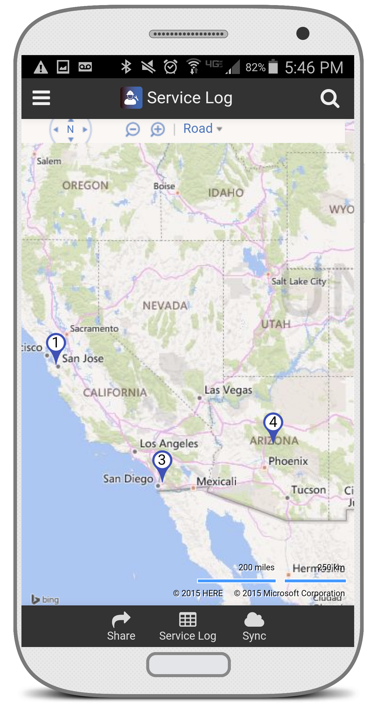
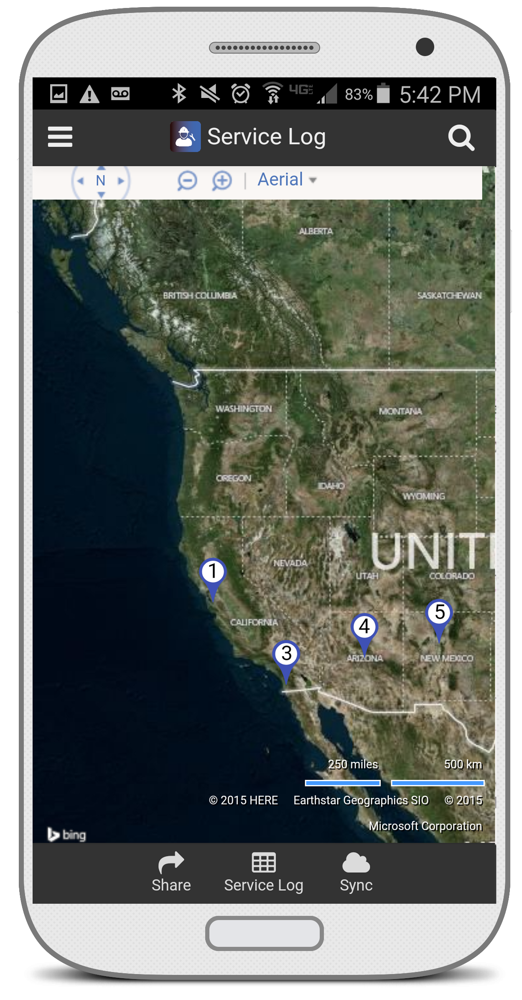
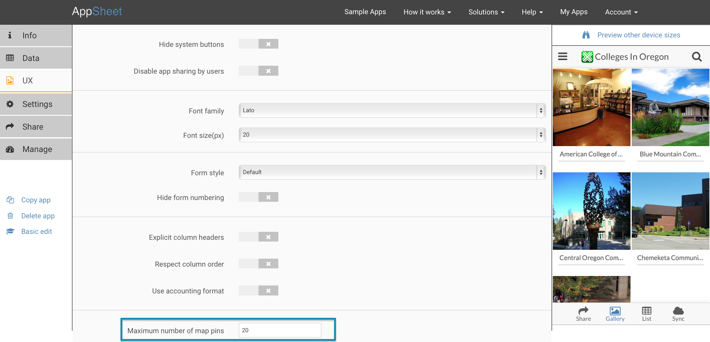

Working with maps – AppSheet
Whenever you have address or lat/long geocoded data, AppSheet provides the ability to see it on a map. Columns of the Address or LatLong data types can be shown on maps. We utilize the Bing maps platform to handle addresses and mapping.
We rely on Google Maps to provide driving directions. If you are using an iPhone or iPad device, you must install Google maps on that device to obtain driving directions.
See how the map function works in our Service Log sample app.
Read a detailed blog post about using the map feature.
Here are some other tips to make sure maps work well for you:
-
If you use the LatLong data type
- the data values should be of the form "44.2456, -122.3348", i.e. comma-separated latitude and longitude values.
- LatLong data can also be captured in a form field when editing entries or adding new entries. This uses high-accuracy GPS location capture on your device, which is potentially a time-consuming and battery-intensive operation. This function should therefore be used only in appropriate situations.
-
When using addresses
- try to provide complete addresses (including city and country). This may seem redundant. For example, a local business in one city may record addresses without a City, State, Country, and ZipCode. While this makes sense to the customer, Bing maps does not have the context to know to which city '100 Main Street' refers. Always try to provide as much information as possible.
- if you find that your addresses are not being mapped correctly, try to look up the address at maps.bing.com to see if there is a problem with the way the address is written.
 
Each of the entries in the table or slice being mapped is shown as a pin on the map. If you have many entries, this could lead to a messy map overrun with pins. Instead, AppSheet specifies a maximum number of pins to show, and chooses the closest pins around the current location. You can modify this maximum number for you app via the Advanced Editor>UX>Options tab. 
You can interact with maps in the expected manner. Maps can be shown as road view or aerial view. The map view can be zoomed and panned as normal. By default, it starts zoomed out to a scale that can show all the pins. So, if you do have addresses to map in Australia as well as Canada, you will start with a map that is zoomed out to show half the world!
When you choose a specific item (or click/tap on a map pin), the map zooms in to the vicinity of that location. Some information about the highlighted item is shown at the top left of the view. This information typically includes a name (the contents of a column of type Name, or a key, or a Text column), an image if the data entry has an Image column, and a link to driving directions from the current location. This information can itself be clicked/tapped to see the full details of the entry.